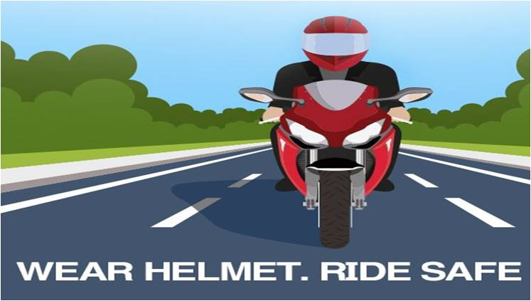

- Project Title:
Detection of Non-Helmet Riders and Extraction of License
Plate Number using Yolo v2 and OCR Method
Project Description:
- Nowadays, we come across various problems in traffic regulations in India which can be solved
with different ideas, Riding motorcycle without wearing helmet is a traffic violation which
leads to Increase in number of accidents and deaths in India.In this project we are detecting
whether two wheeler rider wearing helmet or not, if he is not wearing helmet then we are
extracting number plate of that two wheeler. The main principle involved is Object Detection
using Deep Learning at three levels. The objects detected are person, motorcycle at first level
using YOLOv2, helmet at second level using YOLOv3, license plate number at the last level
using Optical Character Recognition (OCR).
